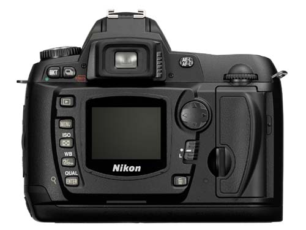
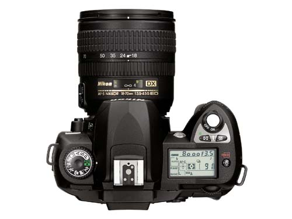
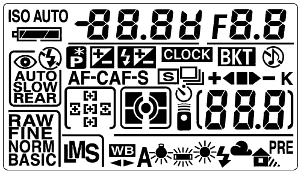

Pictures Nikon D70
Found some pictures of the new Nikon D70. The pictures seem to come from the official brochure.

The display looks rather small 1.8" color LCD (also includes auto rotation of images), viewfinder has diopter adjustment, 95% frame coverage at .75x magnification.

Top of the camera shows a shutterspeed up to 8000, 2 dials for changing shutter speed, aperture, and functions to change exposure/flash compensation, metering mode. A big dial to select from M, A, S, P modes and 7 preset modes like macro, portrait, landscape, close-up, sports, night portrait, night landscape. Focus assist light is also present. Another interesting thing is the new 18-70 consumer AF-S G DX lens (27-105 on 35mm).
The view finder shows 5 af sensors flash and exposure compensation. I’m missing metering mode.

The top display shows shutter speeds aperture, self timer, sound off, flash modes slow, rear, auto and red-eye, current iso setting, bracketing, exposure mode and icons for preset white balance (auto, fluorescent, incandescent, cloudy, flash, shadow). Not sure if it shows white balance also as color temperature. Current AF mode continuous or normal. I do not understand the ‘remote’ trigger icon. It’s probably for firing the camera using a remote trigger device.
Tom Hogan also had his hands on the D70 brochure but Nikon asked to get the information off the site.
If all the specs floating around on the internet are real, then the last D100 is sold now. The camera includes probably anything a D100 has.
| Camera | D70 | D100 |
|---|---|---|
| Max resolution | 3008x2000 | |
| Min resolution | 2240x1448, 1504x1000 | 2240x1448 Medium, 1504x1000 |
| Pixels | 6 Mpix (6.1 raw) | 6 Mpix (6.1 raw) |
| Sensor size | 23.7 x 15.5 mm | 23.7 x 15.5 mm |
| ISO | 200-1600 | 200-1600 |
| AF sensor | 5 sensor CAM900 | 5 sensor CAM900 |
| Min shutter | 1/8000 | 1/4000 |
| Max shutter | 30 sec | 30 sec + Bulb |
| Flash modes | Front curtain, Rear curtain, Red-Eye, Slow, Red-Eye Slow | |
| Flash sync | 1/500 | 1/180 |
| Exposure compensation | 1/2 or 1/3 EV steps | -5EV to +5EV in 1/2 or 1/3 EV steps |
| Metering | 3D Matrix metering, Center weighted, Spot | 3D Matrix metering, Center weighted, Spot |
| Continuous mode | 3fps | 3 fps |
| Buffer | 20 frames jpeg | 6 frames jpeg |
| Remote control | ML-L3 Infrared Remote control | Via Optional vertical grip or software |
| Battery | EN-EL3 lithium ion battery | EN-EL3 lithium ion battery |
| DOF button | yes | yes |
My guess is that the D100 is upgraded soon to a camera based on the F100 body. That upgrades to: PC sync, CAM 1300 AF sensor, 5fps, a magnesium alloy body and metering with AI and AI-S lenses.
XHTML, CSS, RSS feeds. Powered by Movable Type. Hosted @Home with a domain by hostway.
Comments
will nikon introduce cable shuttr release in their digi-slrs!